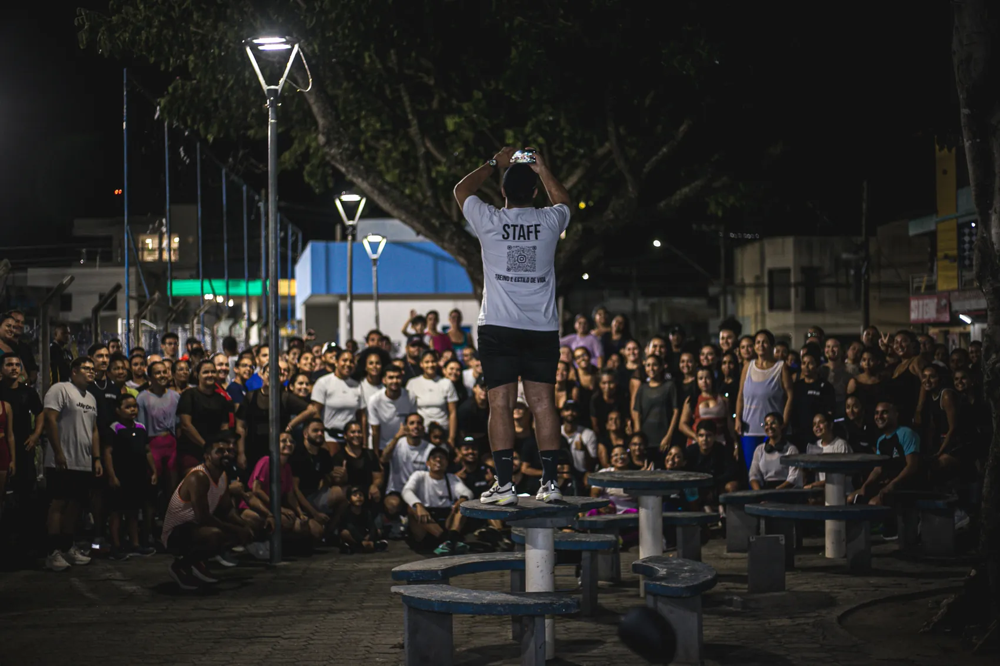
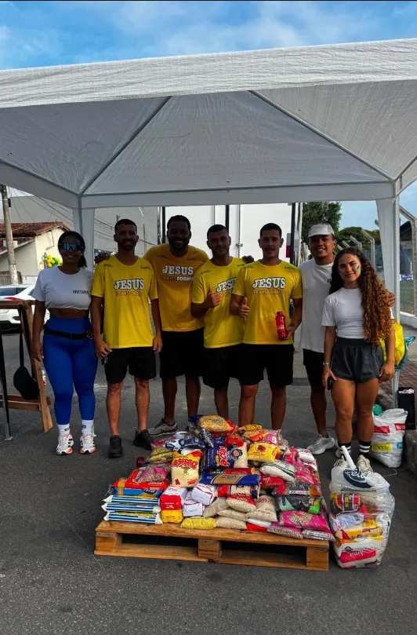
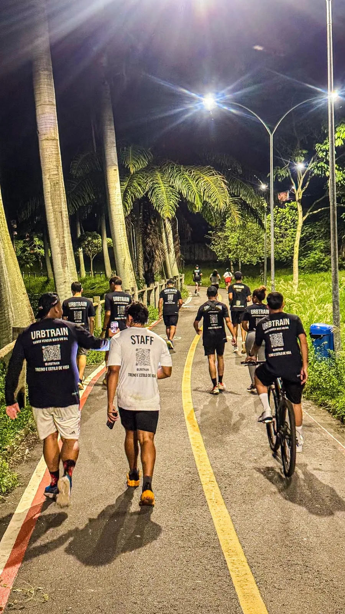

Corrida. Comunidade. Impacto.
A RUA
E NOSSA.
Mais que um grupo de corrida: um movimento urbano que acolhe pessoas e transforma vidas em Linhares.
Quem somos
Movimento que aproxima pessoas.
A URBTRAIN acredita no poder do esporte para criar amizades, fortalecer a saude e gerar impacto social positivo.
Cada treino e uma oportunidade de evoluir, compartilhar experiencias e inspirar outras pessoas a dar o primeiro passo, independentemente do ritmo.
Conhecer a agenda

Impacto social
Cada quilometro pode transformar uma vida.
Correr vai alem da atividade fisica.
Promovemos campanhas solidarias, arrecadacoes e acoes que fortalecem a comunidade e levam esperanca para quem precisa.
Quero apoiar o movimentoEstilo URBTRAIN
Vista o movimento.
Produtos que unem performance, conforto e identidade urbana.
Galeria
Memorias que movem a cidade.
Confira registros dos treinos, encontros e acoes da comunidade.
Abrir galeria